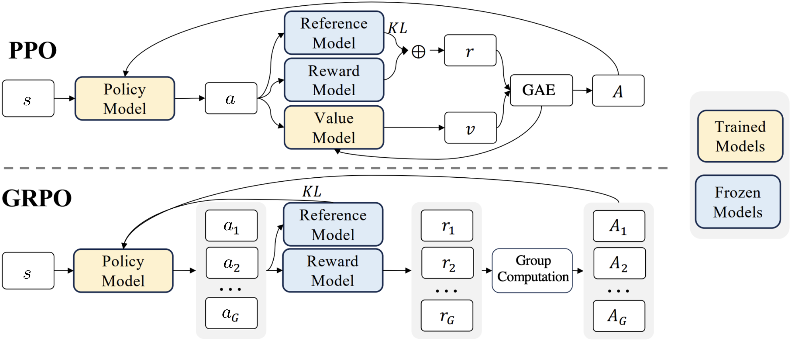

Policy Gradient (PG) #
Compared with value-based methods (Q-learning), Policy-based methods aim directly at learning the parameterized policy that can select actions without consulting a value function. PG methods seek to maximize a performance measure $J(\theta)$ with the policy’s parameter $\theta$, where the updates approximate gradient ascent in $J$.
All methods following this schema are PG, whether or not they also learn an approximate value function.
$$\label{eq:pg} \theta^{(i+1)} \leftarrow \theta^{(i)} + \alpha\nabla J(\theta^{(i)}).$$ There are 2 main advantages of PG methods,
-
Approximating policy can approach a deterministic policy, whereas $\epsilon$-greedy always has probability of selecting a random action;
-
With continuous policy parameterization, the action probabilities change smoothly as a function of the learned parameter, whereas $\epsilon$-greedy may change dramatically for an arbitrarily small change in the estimated action values.
Since the major purpose of this article is to introduce PPO methods from PG, we omit some other important forms of PG here. Readers can find them in the Appendix.
PG Theorem #
An intuitive way to calculate Equation [eq:pg] is to replace $J(\theta)$ with $V^{\pi_{\theta}} (s_0)$. However, the calculation is hard as it directly depends on both the action selection and indirectly the distribution of states following the target selection. PG theorem provides a nice reformulation of the derivative of the objective function to not involve the state distribution derivation.
Notation: we omit $\theta$ in subscripts/superscripts and gradients, assuming $\pi$ depends on $\theta$ and all gradients are w.r.t. $\theta$; i.e., $V^{\pi}\equiv V^{\pi_{\theta}}$, $Q^{\pi}\equiv Q^{\pi_{\theta}}$ and $\nabla\equiv\nabla_{\theta}$.
Theorem 1. Taking the state-value function as the optimizing target, the objective gradient follows, $$\label{equ:pgthem} \nabla J(\theta) \propto \sum_s d^\pi(s) \sum_a Q^\pi(s,a) \nabla \pi(a|s),$$ where $d^\pi(s)$ is the stationary distribution of the policy $\pi_{\theta}$.
To sample with expectation equals or approximates the expression Equ. [equ:pgthem],
\[ \label{equ:pgtheorem-sample} \nabla J(\theta) \propto \sum_s d^\pi(s)\sum_a Q^\pi(s,a) \, \nabla\pi(a|s) \\ = \mathbb{E}_{d^\pi}\!\left[\sum_a Q^\pi(s,a) \, \nabla\pi(a|s) \right] \\ = \mathbb{E}_{d^\pi}\!\left[\sum_a \pi(a|s) \, Q^\pi(s,a) \, \frac{\nabla\pi(a|s)}{\pi(a|s)} \right] \\ = \mathbb{E}_{\pi}\!\left[Q^\pi(s,a) \, \frac{\nabla\pi(a|s)}{\pi(a|s)} \right] \\ = \mathbb{E}_{\pi}\!\left[Q^\pi(s,a) \, \nabla\ln\pi(a|s) \right] \, . \]The eligibility vector $\nabla\ln\pi(a|s)$ is the only place the policy parameterization appears, which can be omitted $L(\theta)=\mathbb{E}_{\pi}[Q^\pi(s,a)]$ since it will be automatically recovered when differentiating.
PG with Baseline #
Theorem 2. PG theorem can be generalized to include a comparison of the action value to an arbitrary baseline $b(s)$, as long as $b(s)$ does not depend on $a$, and this will reduce the variance while keeping it unbiased. $$\label{equ:reinforce-baseline} \begin{aligned} \nabla J(\theta) &\propto \sum_s d^\pi(s)\sum_a (Q^\pi (s,a) -b(s)) \nabla\pi(a|s) \ &= \mathbb{E}_{\pi} \left[(Q^\pi(s,a) -b(s)) \nabla\ln\pi(a|s)\right]. \end{aligned}$$
According to the Theorem 2, the expected return $Q(s,a)$ in Theorem 1 can be replaced by $G$ (expected return of the full or following trajectory by Monte Carlo), $A$ (advantage by Generalized Advantage Estimation or state-value prediction), and $\delta$ (TD-residual by critic prediction).
Off-Policy PG #
Off-policy sampling reuses any past episodes, which has a higher efficiency and brings more exploration. To make PG off-policy, we adjust it with an importance weight $\frac{\pi(a|s)}{\beta(a|s)}$ to correct the mismatch between behavior and target policies.
\[ \label{equ:pgthem-off-policy} \nabla J(\theta) = \nabla \Bigl(\sum_s d^\beta(s) \, V^\pi(s)\Bigr) \\ = \nabla\Bigl(\sum_s d^\beta(s) \sum_a \pi(a|s) \, Q^\pi(s,a)\Bigr) \\ = \sum_s d^\beta(s) \sum_a \Bigl(\nabla \pi(a|s) \, Q^\pi(s,a) + \pi(a|s) \, \nabla Q^\pi(s,a)\Bigr) \\ \stackrel{\text{(i)}}{\approx} \sum_s d^\beta(s) \sum_a Q^\pi(s,a) \, \nabla \pi(a|s) \\ = \mathbb{E}_{d^\beta}\!\left[\sum_a \beta(a|s) \, \frac{\pi(a|s)}{\beta(a|s)} \, Q^\pi(s,a) \, \frac{\nabla \pi(a|s)}{\pi(a|s)}\right] \\ = \mathbb{E}_{\beta}\!\left[\frac{\pi(a|s)}{\beta(a|s)} \, Q^\pi(s,a) \, \nabla\ln \pi(a|s)\right] \, . \]where $d^\beta(s)$ is the stationary distribution of the behavior policy $\beta$, and $Q^\pi$ is the Q-function estimated regard to the target policy $\pi$. Because of hard computation in reality (i), we ignore the approximation term $\nabla Q^\pi(s,a)$.
Proximal Policy Optimization (PPO) #
In this section, we introduce standard PPO and it variants in different domains.
Clip-PPO #
Schulman et al., 2017 proposed the standard PPO that uses a clipped surrogate objective to ensure the policy updates are small and controlled (proximal). Since the advantage under current policy is intangible, we can use Generalized Advantage Estimation (GAE) of the last policy to estimate $\hat{A}^{\pi_{\theta_{\text{old}}}}$ to reduce the variance of policy gradient methods and maintain low bias Schulman et al., 2015, $$\label{equ:Clip-PPO} J^{\text{CLIP}}(\theta) = \mathbb{E}{\pi{\theta_{\text{old}}}} \left[ \min \left( \frac{\pi_{\theta}(a|s)}{\pi_{\theta_{\text{old}}}(a|s)} \hat{A}^{\pi_{\theta_{\text{old}}}}(s, a), \text{clip}(\frac{\pi_{\theta}(a|s)}{\pi_{\theta_{\text{old}}}(a|s)}, 1 - \epsilon, 1 + \epsilon) \hat{A}^{\pi_{\theta_{\text{old}}}}(s, a) \right) \right],$$ where $\hat{A}^\text{GAE}t = \sum{l=0}^{\infty} (\gamma \lambda)^l \delta_{t+l}$, $\delta$ is the TD error, and $\lambda$ is a hyperparameter controlling the trade-off between bias and variance. Note that the clipping could also occur in the value network to stabilize the training process.
The objective function can be augmented with an entropy term to encourage exploration, $$\label{equ:PPO} J^{\text{CLIP+}}(\theta) =\mathbb{E}{\pi{\theta_{\text{old}}}} \left[J^{\text{CLIP}}(\theta)- c\sum_{a} \pi_{\theta}(a|s) \log \pi_{\theta}(a|s))\right].$$
Initialize: policy parameter $\theta$ for actor network $\pi_{\theta}$, parameter $w$ for critic network $V_{w}$, replay memory $\mathcal{D}$ Generate an episode following policy $\pi_{\theta_{\text{old}}}$ and store it into $\mathcal{D}$ Estimate reward-to-go $\hat{R}$ and $\hat{A}^{\pi_{\theta_{\text{old}}}}$ using GAE Compute $J^{\text{CLIP+}}(\theta)$ for all samples according to Equ. [equ:PPO] $w \leftarrow w + \alpha_w \frac{1}{N}\sum_i\nabla_w (V_w(s_i)-\hat{R}(s_i, a_i))^2$ $\theta \leftarrow \theta + \alpha_\theta \frac{1}{N}\sum_i \nabla_\theta J^{\text{CLIP+H}}(\theta)$ $\theta_{\text{old}} \leftarrow \theta$
KL-PPO #
Another formulation of PPO to improve training stability, so-called Trust Region Policy Optimization (TRPO), enforces a KL divergence constraint on the size of the policy update at each iteration Schulman et al., 2017.
\[ \label{alg:TRPO} J^{\text{KL}}(\theta) = \mathbb{E}_{\pi_{\theta_{\text{old}}}} \left[ \frac{\pi_{\theta}(a|s)}{\pi_{\theta_{\text{old}}}(a|s)} \hat{A}^{\pi_{\theta_{\text{old}}}}(s, a) - c\, \mathcal{D}_\text{KL}(\pi_{\theta_{\text{old}}} \| \pi_{\theta}) \right] \, . \]where $\mathcal{D}\text{KL}(\pi{\theta_{\text{old}}} | \pi_{\theta}) = \sum_{a} \pi_{\theta_{\text{old}}}(a | s) \log \frac{\pi_{\theta_{\text{old}}}(a | s)}{\pi_{\theta}(a| s)}$.
Sometimes, the KL-penalty can be combined with policy clipping to achieve better performance in practice.
Adaptive-KL-PPO #
(Schulman et al. 2017) also mentioned Adaptive-KL-PPO, where the KL penalty coefficient is adjusted dynamically. If the policy update is too aggressive $\left( \mathcal{D}\text{KL} \gg \mathcal{D}\text{threshold} \right)$, $c$ is increased to penalize large updates; else if the update is too conservative $\left( \mathcal{D}\text{KL} \ll \mathcal{D}\text{threshold} \right)$, $c$ is decreased to allow larger updates.
Multi-Agent PPO #
In the multi-agent setting, the PPO algorithm can be implemented independently (IPPO) or by a centralized critic (MAPPO). In IPPO, each agent has its own actor and critic and learns independently according to a joint reward Schroeder de Witt et al., 2020. Like IPPO, MAPPO employs weight sharing between agents’ critics, and the advantage in MAPPO is estimated through joint GAE Yu et al., 2022.
\[ \label{equ:MAPPO} J^\text{IPPO}(\theta_i) = \mathbb{E}_{\pi_{\theta_{i, \text{old}}}} \left[ \min \left( \frac{\pi_{\theta_i}(a|s)}{\pi_{\theta_{i, \text{old}}}(a|s)} \hat{A}^{\pi_{\theta_{i, \text{old}}}}(s, a), \text{clip}(\frac{\pi_{\theta_i}(a|s)}{\pi_{\theta_{i, \text{old}}}(a|s)}, 1 - \epsilon, 1 + \epsilon) \hat{A}^{\pi_{\theta_{i,\text{old}}}}(s, a) \right) \right] \\ J^\text{MAPPO}(\theta_i) = \mathbb{E}_{\pi_{\theta_{\text{old}}}} \left[ \min \left( \frac{\pi_{\theta_i}(a|s)}{\pi_{\theta_{i, \text{old}}}(a|s)} \hat{\boldsymbol{A}}^{\pi_{\theta_{\text{old}}}}(s, a), \text{clip}(\frac{\pi_{\theta_i}(a|s)}{\pi_{\theta_{i, \text{old}}}(a|s)}, 1 - \epsilon, 1 + \epsilon) \hat{\boldsymbol{A}}^{\pi_{\theta_{\text{old}}}}(s, a) \right) \right] \, . \]Note that there are some other instantiations of IPPO, but not all of them are vulnerable to non-convergence issues. The one with full actor critic parameter or information sharing can be regarded as a centralized method. Besides, for cases where a general solution is still intangible even with parameter sharing (e.g. the exclusive game), heterogeneous-agent PPO allows the agents to take turns learning by using others’ information, which can work well with strong assumptions.
A great example is PettingZoo’s agent cycle and parallel environments.
Group Relative Policy Optimization (GRPO) #
As DeepSeek has made a splash in the LLM community, the RL method GRPO involved has received a lot of attention (Zhihong Shao 2024). GRPO is a variant of PPO, where the advantage is estimated using group-relative comparisons rather than GAE. This approach eliminates the critic model, which improves the training efficiency and stability. The DeepSeek framework consists of: (i) a frozen reference model, which is a stable baseline for computing rewards; (ii) a given reward model, responsible for evaluating generated outputs and assigning scores; (iii) a value model, which estimates the expected return of a given state to aid in policy optimization; and (iv) a policy model, which generates $|\mathcal{G}|$ responses and is continuously updated to improve performance based on feedback from the other components. The learning objective for GRPO is, $$\small J^\text{GRPO}(\theta) = \mathbb{E}{\pi{\theta_\text{old}}, i \in \mathcal{G}} \left[ \min \left( \frac{\pi_{\theta}(a_{i} | s, \vec{a}{i})}{\pi{\theta_\text{old}}(a_{i} | s, \vec{a}{i})} \hat{A}^\mathcal{G}, \text{clip}(\frac{\pi{\theta}(a_{i} | s, \vec{a}{i})}{\pi{\theta_\text{old}}(a_{i} | s, \vec{a}{i})}, 1 - \epsilon, 1 + \epsilon) \hat{A}^{\mathcal{G}}\right)-c\mathcal{D}\text{KL}(\pi_\text{ref} | \pi_{\theta})\right],$$ where the advantage $\hat{A}^\mathcal{G}i=\frac{r_i-\text{mean}(r)}{\text{std}(r)}$ is estimated by grouped actions produced at the same state. $\mathcal{D}\text{KL}(\pi_\text{ref} | \pi_{\theta})=\frac{\pi_{\text{ref}}(a_{i} \mid s, \vec{a}{i})}{\pi{\theta}(a_{i} \mid s, \vec{a}_{i})}
- \ln \frac{\pi_{\text{ref}}(a_{i} \mid s, \vec{a}{i})}{\pi{\theta}(a_{i} \mid s, \vec{a}_i)} - 1$ is a positive unbiased estimator, which measures the difference between the policy of trained model and reference model (like direct policy optimization).
